Telas do aplicativo mobile.
Tela de Cadastro
-Tela de cadastro do usuário, onde o usuário poderá se cadastrar tendo as opções de professor ou aluno, tendo certos privilegios que o usuário aluno não terá.
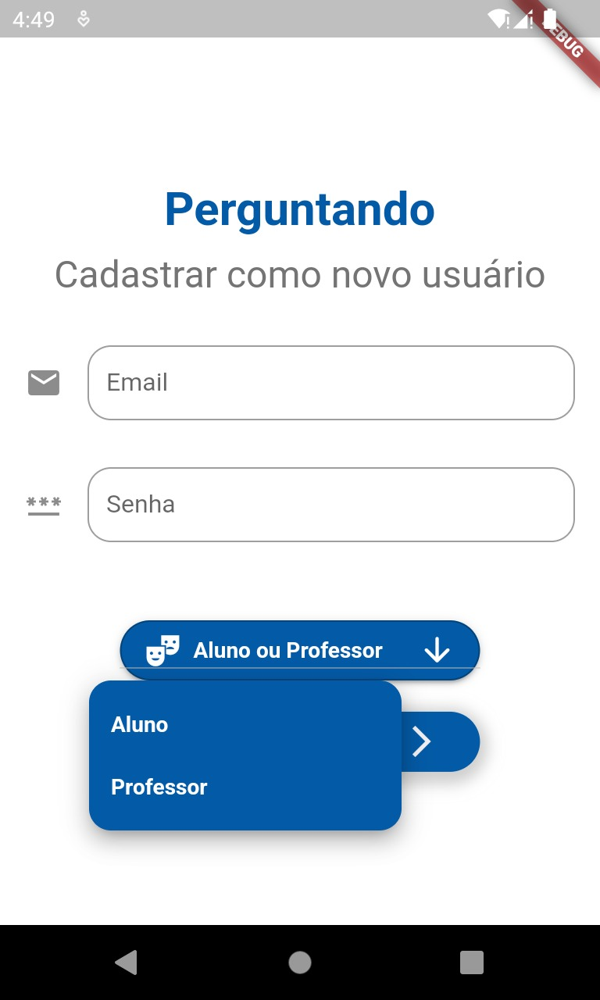 FIGURA 1
Tela de Login
-Tela onde o usuário irá acessar sua conta, sendo professor ou aluno.
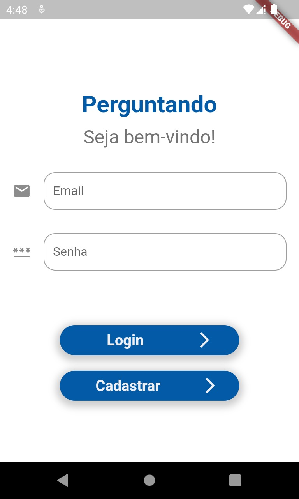 FIGURA 2
Tela Inicial do App
-Assim que o usuário fizer seu login, ele será direcionado para a página inicial onde contém os cards dos jogos.
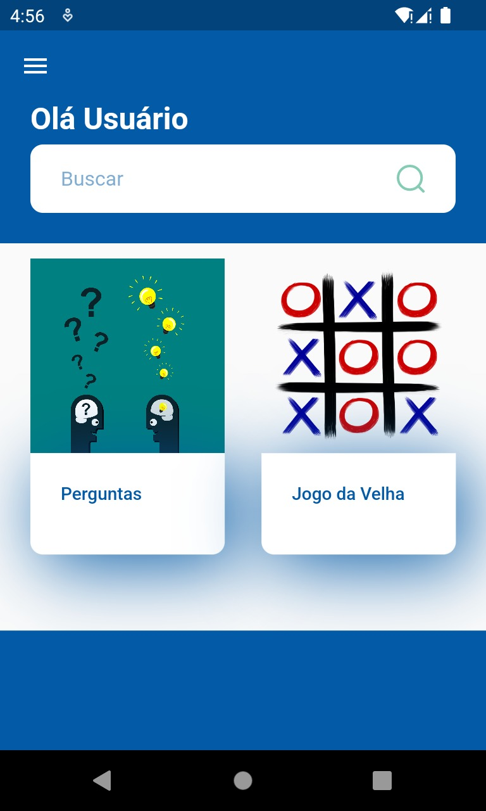 FIGURA 3
Tela de Informações do Usuário
-Nessa tela, contém as informações do usuário.
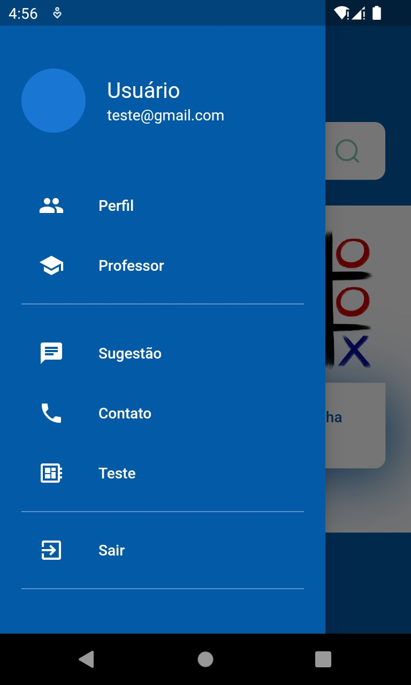 FIGURA 4
Tela de adicionar perguntas e respostas
-O usuário cadastrado como professor terá o privilégio de poder adicionar perguntas e respostas, podendo escolher as alternativas certas e selecionar para qual tema a pergunta será direcionada.
FIGURA 5
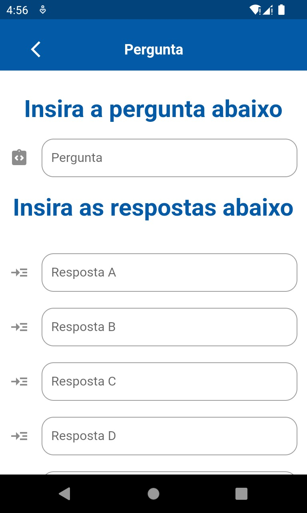 FIGURA 6
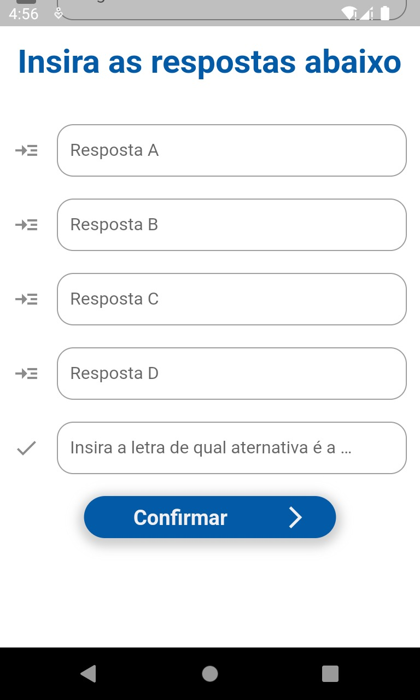 FIGURA 7
Tela de adicionar temas
-O professor poderá cadastrar novos temas(matérias).
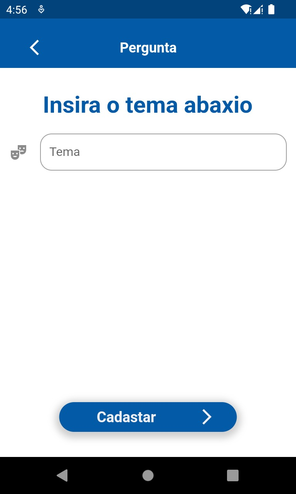 FIGURA 8
Seleção de temas
-O usuário cadastrado como aluno, poderá escolher o tema no qual quer iniciar o quiz de perguntas e respostas.
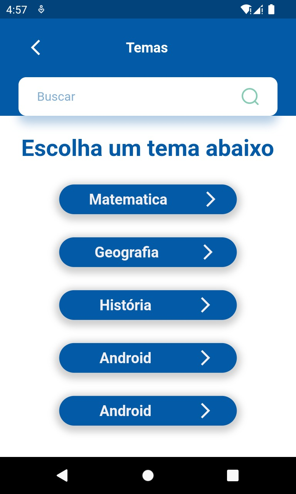 FIGURA 9
Tela de jogo Matemático
-O aluno selecionou o tema matemática e iniciou o jogo.
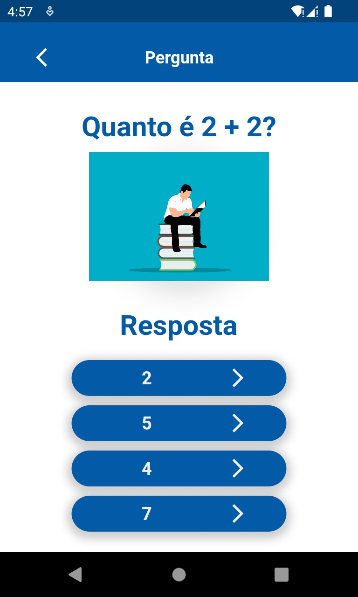 FIGURA 10
-Pop-up sinalizando se acertou a pergunta ou errou.
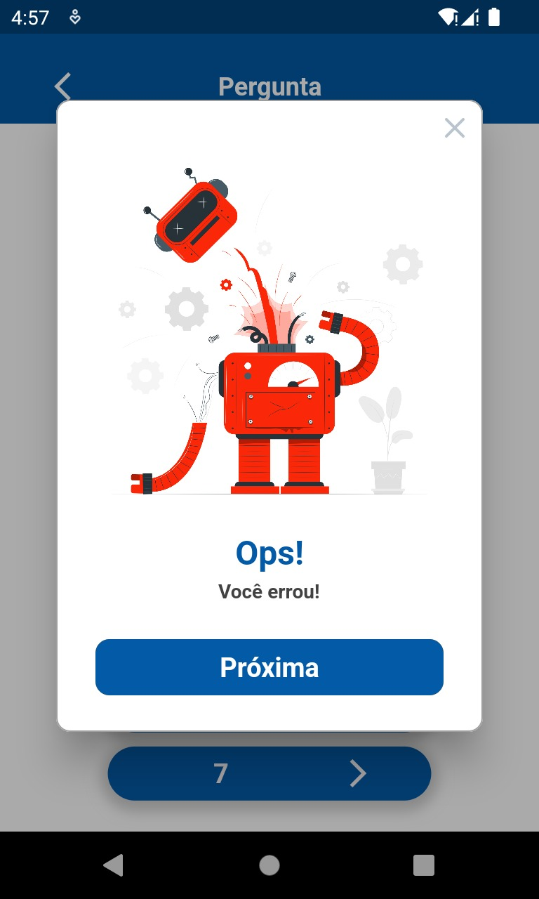 FIGURA 11
Tela de jogo Exemplo
-Um jogo adicional, optamos por um jogo de xadrex.
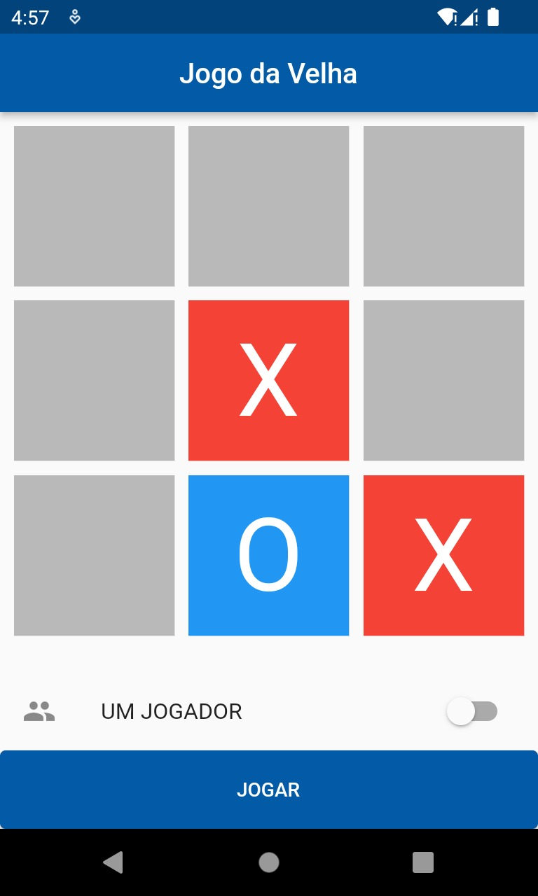 FIGURA 12
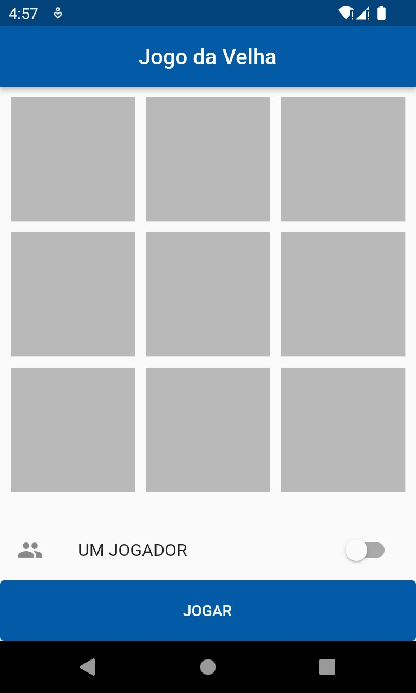 FIGURA 13